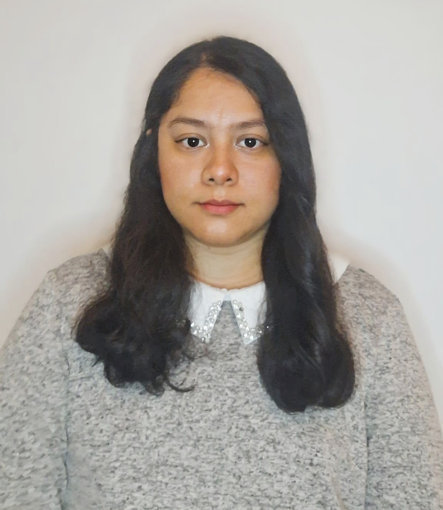

Bienvenido

Sobre mí
Soy una persona dinámica, responsable y creativa, con facilidad para
adaptarme a nuevos entornos y desafíos. Disfruto trabajar en equipo,
aprender constantemente y desarrollar nuevas habilidades tanto a nivel
personal como profesional.
Me apasiona explorar nuevas tecnologías y descubrir formas innovadoras de
mejorar mis conocimientos y capacidades.
Más sobre mi personalidad
Entre mis hobbies destacan el dibujo, la creación de pequeñas animaciones 2D, la programación, cocinar recetas internacionales, resolver puzzles, además de coleccionar rocas y piedras preciosas. También disfruto de los videojuegos como una forma de entretenimiento y creatividad.
Mi curiosidad y pasión por aprender nuevas tecnologías me llevaron a descubrir un gran interés por el Big Data, Data Science y la Inteligencia Artificial. Disfruto creando modelos, analizando gráficos y aprendiendo cómo obtener mejores resultados predictivos mediante el análisis de datos.
Habilidades
Competencias
• Trabajo en equipo
• Comunicación efectiva
• Resolución de problemas
• Trabajo bajo presión
• Apredizaje Continuo
• Adaptabilidad
Habilidades Profecionales
• Python (Spyder, Pycharm, Visual Studio Code)
• Jupyter note book
• Analisís y visualización de Datos
• Limpieza de de Datos
• SQL (MySQL, SQLDeveloper)
• Java (Eclipse)
• Mongodb
• Excel
Contacto
📍 Ubicación: Madrid, España
Email: ale6rom@gmail.com
Teléfono: +34699538307
LinkedIn: linkedin.com/in/alejandra-romero27
GitHub: github.com/Alejandra-Romero-G
M. Alejandra
Romero Gutiérrez

Información de contacto
ale6rom@gmail.com
Teléfono
+34 699533807
Dirección
Madrid - España
Estudios
Máster Big Data, Data Science & IA
Universidad Complutense de Madrid
Desarrollo y visualización de datos con Python: Programación
Centro digital de Alcobendas
Curso programación en Java: Programación
Academia grupo Aspacia
Curso de Python: Programación
Universidad Complutense de Madrid
Medicina Veterinaria y Zootecnia
Universidad Autónoma Gabriel René Moreno
Experiencia laboral
Veterinaria
Hospital Veterinario Postas
- Registro y mantenimiento de datos clínicos.
- Control y actualización de historiales médicos electrónicos.
- Coordinación con equipo clínico para toma de decisiones basadas en datos.
Analista de Datos
Fundación Ser Fauna
- Limpieza y análisis de bases de datos.
- Detectar patrones y apoyar la toma de decisiones del equipo basado en datos.
- Corrección de errores, duplicidades e inconsistencias en los datos.
- Dashboards en Excel.
Veterinaria Encargada
Play Land SRL (Bioparque), Santa Cruz
- Implementación y mantenimiento de registros clínicos para seguimiento de salud animal.
- Análisis de patrones en evolución clínica y comportamiento poblacional.
- Organización, validación y corrección de datos clínicos para mejorar la calidad de los registros.
- Coordinación operativa y supervisión de procesos veterinarios.
Habilidades
Lenguajes
- Python
- SQL
- Mongodb
- HTML
- Ingles Intermedio
Data Analysis
- Limpieza de datos
- Visualización de Datos
- Análisis Estadístico
- Identificación de Patrones
- Trabajo en equipo y comunicación efectiva
Herramientas
- Excel
- Django
- MySQL, SQLDeveloper
- Spark, otras librerias
- Jupyter Notebook
Carta de Presentación
M. Alejandra Romero Gutierrez
Estudiante de Máster en Big Data, Data Science e Inteligencia Artificial
Estimado/a responsable de Selección,
Escribo esta carta para mostrar mi interés en realizar prácticas en el área de Big Data, Data Science o Machine Learning en su organización.
Actualmente curso el Máster en Big Data, Data Science e Inteligencia Artificial en la Universidad Complutense de Madrid, complementando mi formación con proyectos prácticos de análisis y modelado de datos.
Soy Licenciada en Medicina Veterinaria y tengo experiencia en gestión de datos clínicos, análisis de muestras biológicas y toma de decisiones en entornos exigentes. Esta trayectoria me ha permitido desarrollar pensamiento analítico, atención al detalle y capacidad de adaptación.
Mi interés por el sector tecnológico surge de una motivación genuina por el análisis de datos y el desarrollo de modelos predictivos orientados a la toma de decisiones.
Actualmente trabajo con herramientas como Python, SQL, Java, MongoDB y Tableau, además de aplicar fundamentos estadísticos y técnicas de Machine Learning en proyectos académicos.
Considero que mi perfil combina una sólida base científica con nuevas competencias tecnológicas, aportando una visión analítica estructurada y gran capacidad de aprendizaje continuo.
Me encantaría contribuir a su equipo mientras continúo desarrollando mis habilidades en un entorno profesional real.
Quedo a disposición para ampliar cualquier información y concertar una entrevista.
Atentamente,
M. Alejandra Romero Gutierrez